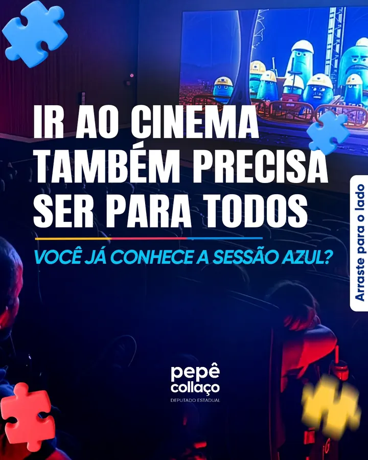
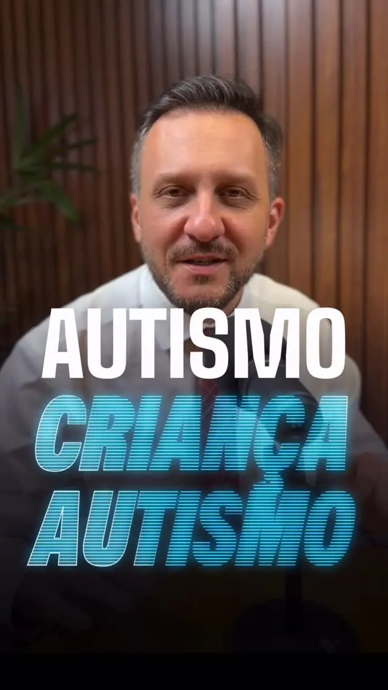
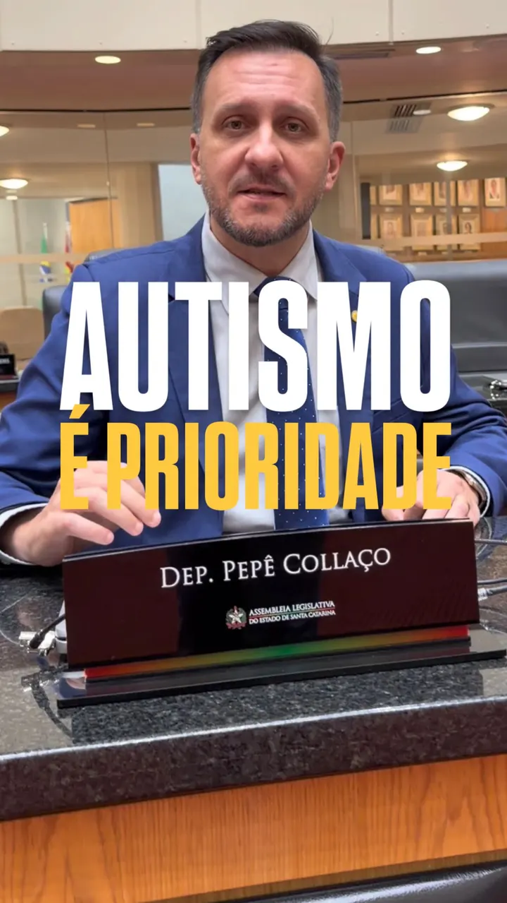
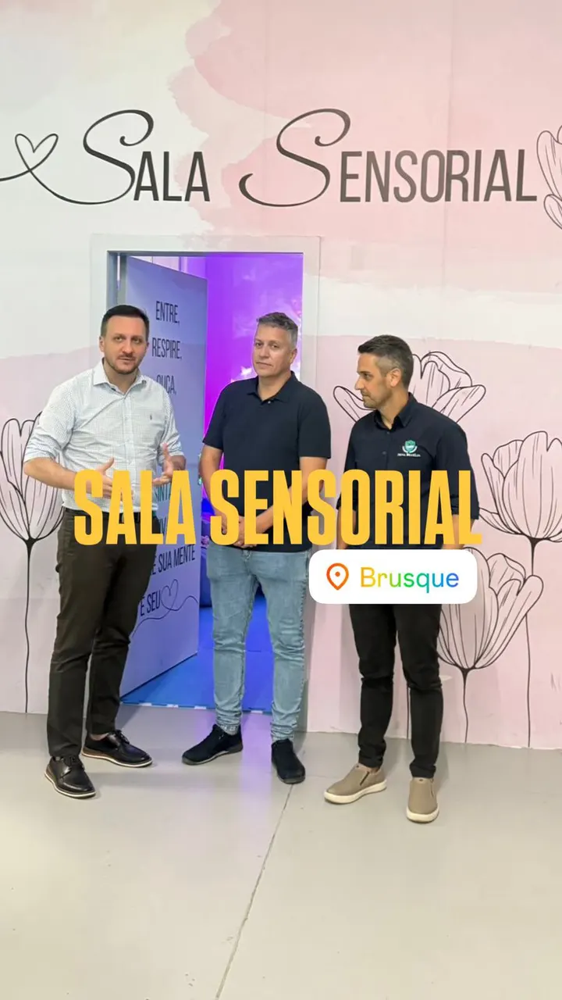
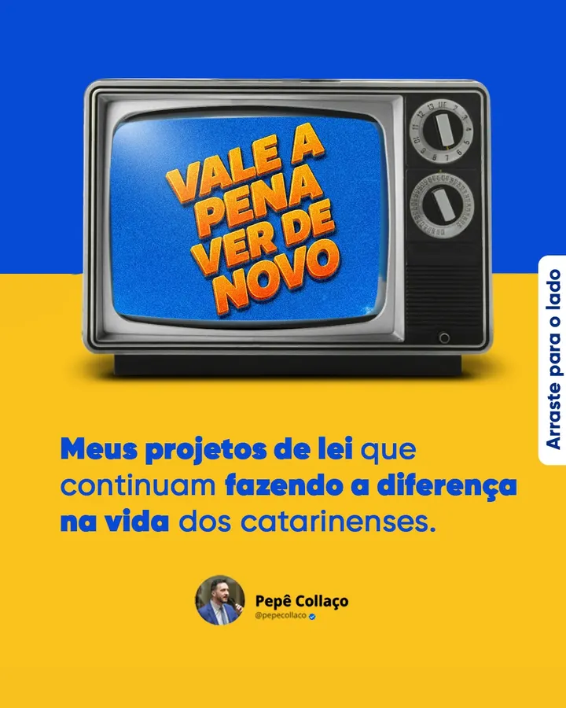
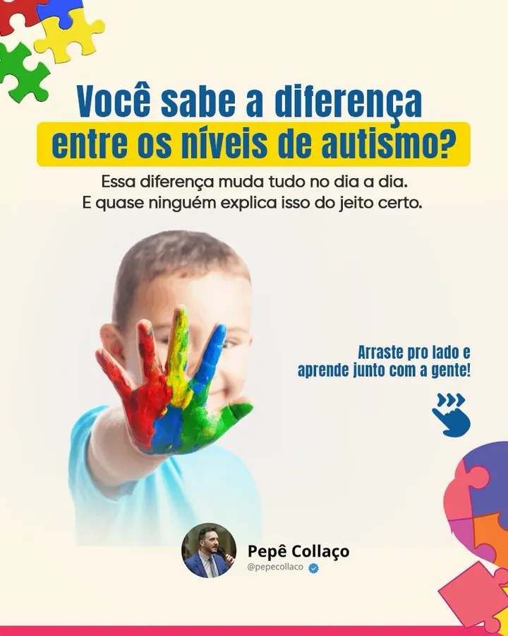

Equoterapia e terapia ocupacional
Com a ajuda dos cavalos, muitas crianças desenvolvem equilíbrio, autonomia e confiança. O que se quer, principalmente, é qualidade de vida, e ela vem em sessão marcada, toda semana, perto de casa.
Ninguém esquece o dia em que recebe um diagnóstico de autismo. Naquele momento não muda só a vida de uma criança: muda a vida de uma família inteira. E vem a pergunta que passa a acompanhar todo dia: quem vai caminhar do nosso lado?

Nenhuma criança é igual à outra, e o desenvolvimento não acontece de um jeito só. Por isso o mandato não financiou um programa: financiou acesso, em cada cidade que pediu.
Com a ajuda dos cavalos, muitas crianças desenvolvem equilíbrio, autonomia e confiança. O que se quer, principalmente, é qualidade de vida, e ela vem em sessão marcada, toda semana, perto de casa.
A cidade com o maior volume da causa: três emendas somadas para equoterapia na APAE e para o atendimento continuado das famílias.
Equoterapia e terapia ocupacional na APAE, e o parque infantil adaptado para crianças com transtorno do espectro autista: brincar também é terapia.
Uma crise não espera. A sala sensorial é um espaço pensado para reduzir os estímulos, acolher a criança e ajudá-la a se reorganizar. O que se quer é devolver a calma.
Custeio para o Conselho Comunitário manter o programa de atendimento ao público com TEA funcionando o ano inteiro.
O desenvolvimento não acontece de um jeito só. Ele acontece na equoterapia, mas também na água, no esporte e em toda atividade que ajuda cada criança a superar o próprio desafio.
Autismo não tem endereço, e a fila do diagnóstico é a mesma na cidade grande e na de cinco mil habitantes. Estes são os municípios onde o mandato colocou dinheiro na causa, do litoral ao Vale.
Além destes, o mandato destinou R$ 1,35 milhão a APAEs de outras oito cidades: veículos, reformas e salas de aula que atendem também as famílias atípicas.
Emenda resolve o ano. Lei resolve a década. Incluir não é fazer a criança se adaptar ao mundo: é preparar o mundo para receber cada criança, e isso se escreve no papel, na Assembleia.
Criada pelo mandato para que o assunto entrasse em pauta na Alesc e nunca mais fosse esquecido. Não é pauta de um mês do ano: é causa permanente.
Plataforma de mapeamento das pessoas com TEA em Santa Catarina, com Alesc, universidades, APAEs e AMAs. Quem não conhece a realidade não consegue criar política pública de verdade, e hoje o Estado não sabe quantas famílias precisa atender.
Incentivo a sessões de cinema adaptadas para crianças e adolescentes com autismo e suas famílias. Para muita gente, é a primeira experiência de lazer da família inteira junta.
Atividades e avaliações adaptadas, para que a aprendizagem seja medida de forma justa, seguindo padrões já comprovados em outros estados. Em tramitação nas comissões.
Dá preferência para que o segundo professor do aluno com TEA seja o mesmo profissional do ano anterior. Um segundo professor pode mudar uma trajetória escolar: trocar de pessoa todo ano desmonta o vínculo que levou um ano para ser construído. Em tramitação nas comissões.
Terapia, escola, lazer e as famílias atípicas, contados pelo próprio deputado. Toque para assistir no Instagram.
 Acolher é fazer a diferença
Acolher é fazer a diferença
 Inclusão e oportunidade
Inclusão e oportunidade
 Inclusão não é favor
Inclusão não é favor
Arraste para o lado. Cada vídeo abre no Instagram.
O que cada projeto muda na prática, com a situação oficial da Alesc.
 Imagem ilustrativa
LEI Nº 19.160/2025
Cine Azul
Sessões de cinema adaptadas para crianças e adolescentes com autismo e suas famílias.
Entender a lei
Imagem ilustrativa
LEI Nº 19.160/2025
Cine Azul
Sessões de cinema adaptadas para crianças e adolescentes com autismo e suas famílias.
Entender a lei
 Imagem ilustrativa
EM COMISSÕES
Protocolo Individualizado de Avaliação (PIA)
Avaliação adaptada para alunos com autismo nas escolas do Estado.
Entender a lei
Imagem ilustrativa
EM COMISSÕES
Protocolo Individualizado de Avaliação (PIA)
Avaliação adaptada para alunos com autismo nas escolas do Estado.
Entender a lei
 Imagem ilustrativa
EM COMISSÕES
Continuidade do segundo professor
O aluno com autismo segue com o mesmo segundo professor no ano seguinte.
Entender a lei
Imagem ilustrativa
EM COMISSÕES
Continuidade do segundo professor
O aluno com autismo segue com o mesmo segundo professor no ano seguinte.
Entender a lei

Carrossel @pepecollaco14/08/2026 Como autor da lei que instituiu a Sessão Azul em Santa Catarina, tenho orgulho de ver essa… 10621
Reel @pepecollaco12/03/2026 VÍNCULO TAMBÉM ENSINA 26937 Reel
@pepecollaco19/07/2026
Inclusão também se faz com investimento e cuidado.
1379
Reel
@pepecollaco19/07/2026
Inclusão também se faz com investimento e cuidado.
1379

Reel @pepecollaco15/04/2026 AUTISMO É PRIORIDADE 13516
Reel @pepecollaco12/09/2025 INCLUSÃO QUE FAZ A DIFERENÇA! 19617
Carrossel @pepecollaco06/08/2026 VALE A PENA VER DE NOVO 5114
Carrossel @pepecollaco22/04/2026 AUTISMO NÃO É TUDO IGUAL 426 Reel
@pepecollaco02/12/2024
AUTISMO, eu defendo!
16916
Reel
@pepecollaco02/12/2024
AUTISMO, eu defendo!
16916